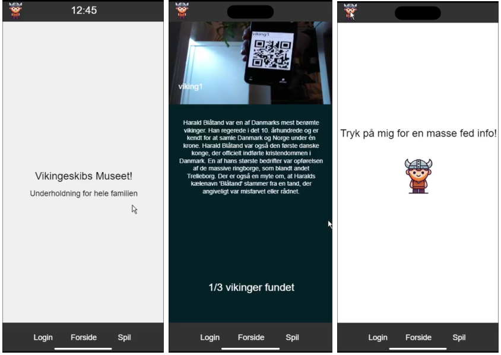
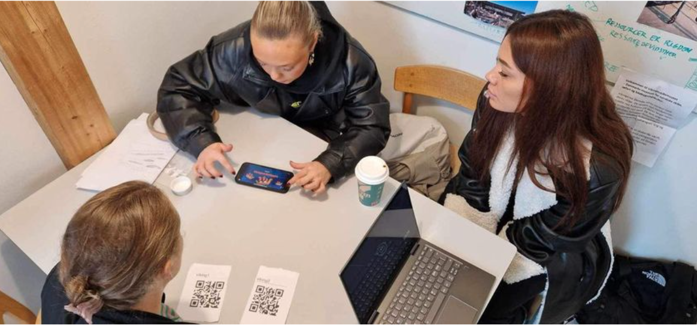

About
This project explored how digital interaction could create a more engaging and accessible experience for visitors at the Viking Ship Museum in Roskilde.
The museum wanted to improve the way visitors discovered activities, information and historical content, while also exploring new ways of communicating the museum experience through digital technology.
The Challenge
Existing information displays could be difficult for international visitors to understand, while parts of the museum required new ways of communicating historical knowledge when staff were not present.
We therefore explored how an interactive digital platform could motivate visitors to engage more actively with the museum rather than simply receive information passively.
The Concept
The concept evolved into a mobile treasure hunt aimed primarily at younger visitors. Guests could download the app, scan QR codes placed throughout the museum and complete missions guided by animated Viking characters.
Each scanned code revealed a new task or piece of historical content, encouraging visitors to move through the museum and discover the next location through play.

Design Process
The project developed through several iterations, beginning with speculative design and the question: What if Vikings still existed in contemporary society?
This exploration gradually moved from speculative scenarios towards a more concrete museum experience. We used ideation, storyboarding, design sprints and prototyping to define the interaction and test different ways of combining play, navigation and learning.
A functional prototype was developed with a particular focus on the QR-code interaction, which became the central link between the physical museum environment and the digital experience.

User Testing
The prototype was tested with users and museum staff to evaluate both the interface and the overall experience.
Participants responded positively to the interactive treasure hunt, particularly the animated Viking characters and the use of QR codes as a way of progressing through the experience.
The testing helped us refine the relationship between entertainment and learning, with the aim of making historical information feel integrated into the interaction rather than added on top of it.
Methods
Research through Design
Design Sprint 2.0
Speculative Design
Storyboarding
Prototyping
User Testing
Technology & Design
Mobile Interaction
QR-code Interaction
p5.js
Digital Prototyping
Interaction Design